名车：性感金属的前世今生
男人，一辈子总要有若干知己、生死相依的爱人和一辆好开的汽车。汽车就是男人打开世界的大门的遥控钥匙，是男人在不同时间的面孔和性格的切片。
墨西哥的山路上，逃离肖申克监狱的蒂姆•罗宾斯驾驶的冷艳庞蒂亚克GTO,是男人的激扬与隐忍；黑客世界的街头，锋利入骨的凯迪拉克CTS遇上了基努•里维斯这样的忧郁型男，是男人的担当与勇敢；007系列电影中，阿斯顿•马丁让皮尔斯•布鲁斯南窃玉偷香如此圆满，是男人的至情与浪漫；无法忘怀的《教父》里，马龙•白兰度的世界被凯迪拉克一分两半，是男人的力量与威严......
男人不止一面，越欣赏，越懂欣赏；汽车不止一面，它让男人敢梦想，敢追寻，让世界在极速中淡化如烟。
速度与激情：那些年我们一起追过的小钢炮
法拉利：跑车之王
法拉利不仅仅是彰显速度与设计的典范，更是一种精神的感召力和狂热的信仰。你只是想起那道公色的闪电，就会血脉贲张，你只要坐在法拉利的车里，就是忠诚的开始。
布加迪：速速哲学家
如果某个车展上出现了布加迪的身影，那么这场车展的水准肯定不凡；如果在汽车博物馆里能够陈列一辆布加迪汽车，那么这个博物馆也一定是顶级的。人们对于布加迪的印象多数停留在高傲不羁和超现实阶段，它像是要故意与整个世界保持一段距离，其实是整个世界对它难以企及。
宜风云，宜风月：与快感缠绵的皇家骑士
劳斯莱斯：帝王之选
劳斯莱斯本身就是最高荣耀的代言人，就是无所不能的通行证。任何一款车，若想要在气势上与它一争高下，都非明智之举。有人说，当宾利和劳斯莱斯相继从大不列颠离开，变成了德意志认的“附属“时，也意味着英国这个坚守贵族精神的城堡已经逐渐被金钱攻陷。但是宾利和劳斯莱斯绝对不是德意志人的战利品，而更像是使者，关于英伦精神的传道者。
玛莎拉蒂：优雅的意大利情人
在跑车的王国里，意大利拥有天然的基因优势，在法拉利和兰博基尼近乎咆哮的引擎声中，玛莎拉蒂如同女王一般优雅临世，因此它又被称作“意大利情人”。它没有法拉利那样疯狂，也不及兰博基尼那般极端，而是更优雅和舒适。
越开越野:暴走的烈火金刚
悍马：街头霸王
如果说吉普车是”二战“中美军的身份象征，那么悍马越野车就是20世纪90年代美国大兵的陆地伴侣。在1991年的那场"沙漠风暴”中，第一个冲进科威特城市的身影既不是战力强横的M1A1主站坦克，也不是M2步兵战车这样的“战场出租车”，而是那些搭载着陶氏导弹和M2重机枪，八面威风的军用悍马。此后的二十年中，无论是摩加迪沙的街头喋血，还是巴格达的巷战硝烟悍马的身影几乎无所不在，无役不与，它在战场上耀武扬威的形象让优越感十足的美国人产生了强烈的心理共鸣，也让几十亿观众通过电视见证了地道的美式霸权，还间接催生了民用版悍马这位车坛的乱世枭雄。
低调也是传奇：平民车的小清新
甲壳虫汽车：虫虫也疯狂
它是动画片中的超级明星，不论是《七龙珠》《名侦探柯南》，还是《变形金刚》，都有它可爱的身影；它是最伟大的平民车，从1938年第一辆样车下线，到今天已经生产了2100万辆；它是一种兴奋剂，当你驾驶着它蹦跳着在车流中行进时，它总能领先一步溜进别人正要拐入的停车位，然后用车尾上闪亮的尾灯嘲笑那些目瞪口呆的小跑车和大越野；它还是汽车世界中无阶级战士，当豪华汽车大肆标榜自己的身份和地位之时，它却将阶层、性别和年龄扔进了垃圾箱，任何人都可以驾驶它，不必担心外界来窥视自己的个人情况......它不是别人，他是德国大众的经典汽车品牌——甲壳虫。
保时捷公司的创始人费蒂南.保时捷在24岁时(1899年)已经发明了电动轮套马达，在第二年的巴黎国际展览会上，保时捷已经名扬四海。保时捷汽车具有鲜明的特色，甲壳虫式的车形，后置式发动机和优异的性能，令它很快成为知名的汽车。1963年法兰克福国际汽车展览会上，展示了保时捷911型，这个设计直到现在还有广泛的市场。它的车体设计者是飞利.保时捷的大儿子，费蒂南.阿乐桑德.保时捷，保时捷带后齿轮箱底盘和V--8发动机的928型，新技术955型，以及带电子调整的四轮驱动系统和无升力车身的911Carrera4型，是近几年来最重要的发展。
德国是世界上最早拥有高速公路的国家，也是现今惟一高速公路不限速的国家。因此，高速汽车的研制与生产在德国不但有悠久的历史及优越的技术条件，而且具备广阔的市场。同那些几乎是艺术品的意大利跑车不同，甚至有点逊色，但当您驾驶保时捷在无限速的高速公路上纵懂疾驰时，你才能了解保时捷与众不同的速度理念，你才会发自内心地喜爱它。
保时捷最知名的车型是1963年9月亮相的911，它曾使竞争对手心碎不已，至今仍是保时捷的摇钱树。
举凡世界上的著名跑车，有的只生产几代便销声匿迹（如法拉利），但要代代车型皆不同，想将第一代和现金最新一代联系在一起，比登天还难。汽车历史上最成功的长青跑车，当数保时捷911。如把历代保时捷911摆在一起，很轻易地就可由具体外形特征认出它们是有血缘关系的至亲，这种关联性正是保时捷911之所以声名大噪、倍受瞩日的主要因素之一。
 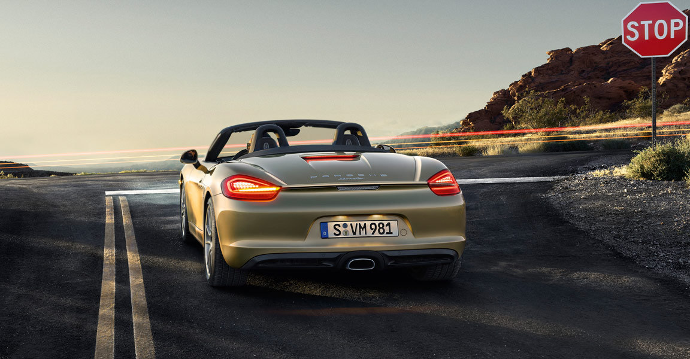
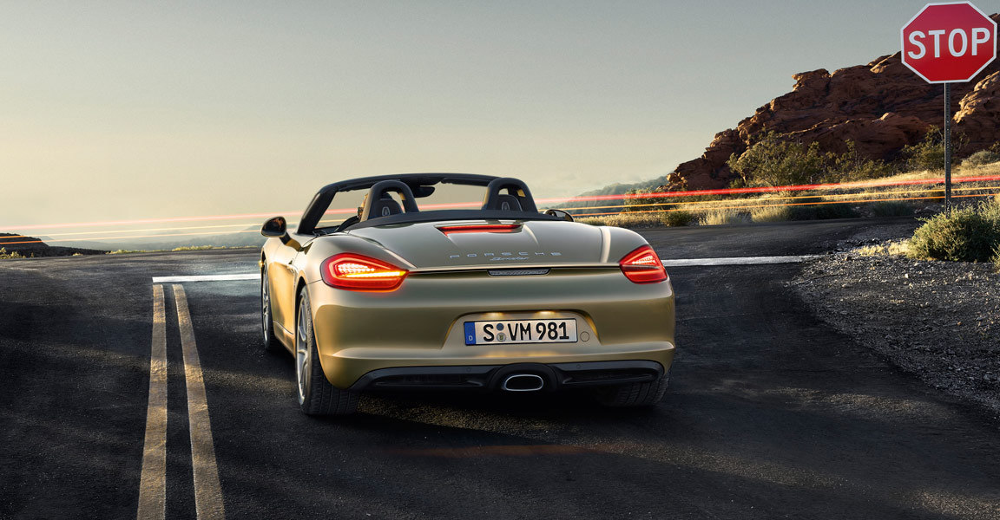
奔驰汽车
1909年6月申请戴姆勒公司登记了三叉星做为轿车的标志，象征着陆上、水上和空中的机械化。1916年在它的四周加上了一个圆圈，在圆的上方镶嵌了4个小星，下面有梅赛德斯"Mercedes"字样。"梅赛德斯"是幸福的意思，意为戴姆勒生产的汽车将为车主们带来幸福。
自从奔驰制造了第一辆世界公认的汽车后，一百多年过去了，汽车早已度过了他的百岁寿辰，而在这一百多年来，随着汽车工业的篷勃发展，曾涌出现很多的汽车厂家，也有显赫一时的，但最终不过是昙花一现。到如今，能够经历风风雨雨而最终保存下来，不过三四家、而百年老店，却仅只奔驰公司一家。
.
奔驰S级是奔驰全系的高端豪华车型，凭借大气稳重的外型以及奢华的配置，
奔驰S级博得了不少成功人士的喜爱.新款S级仅为中期改款车型，外观上仅作了小幅度修改。修改过的保险杠进气口还有LED日间行车灯让整车显得更为年轻，而新的LED尾灯也增加了夜间行车安全性能。
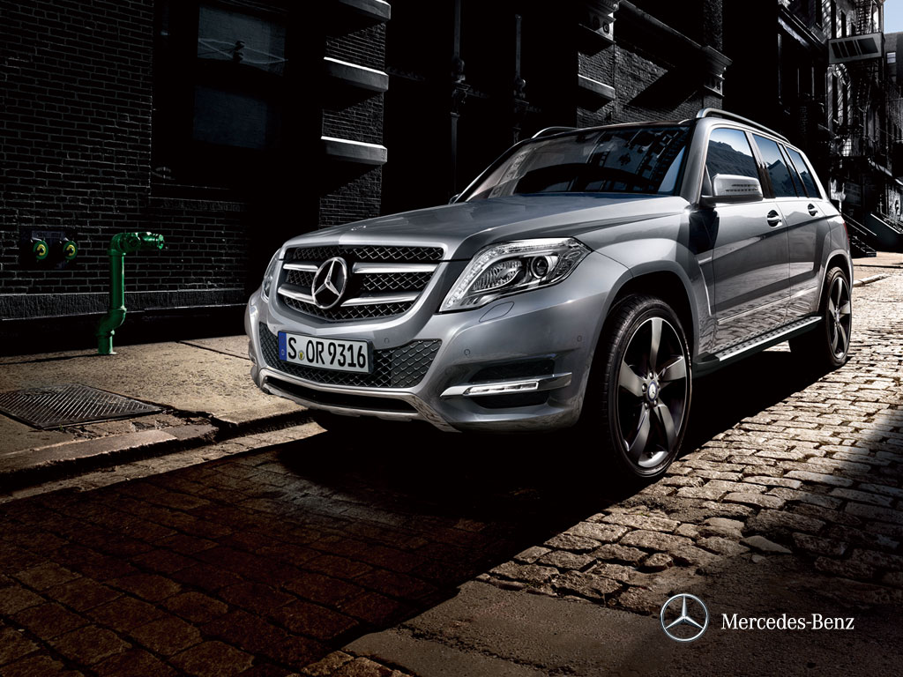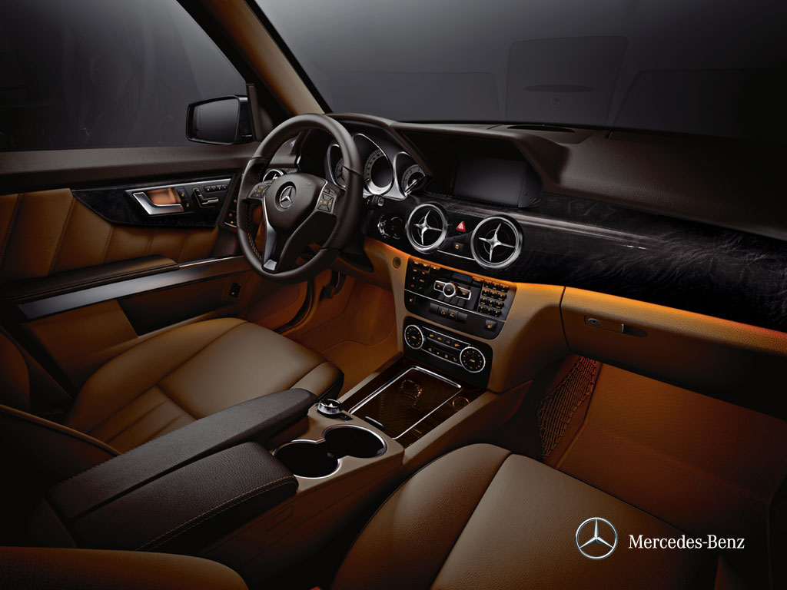
 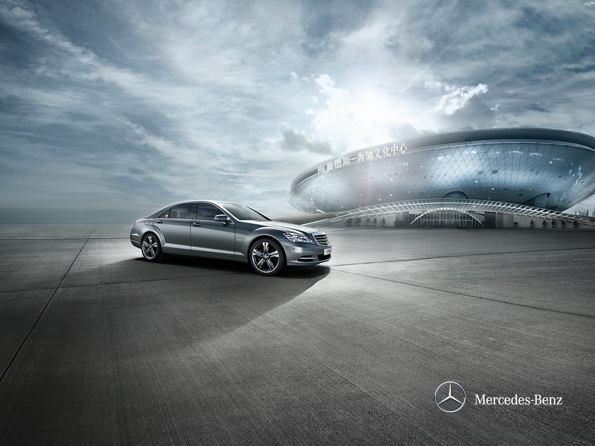
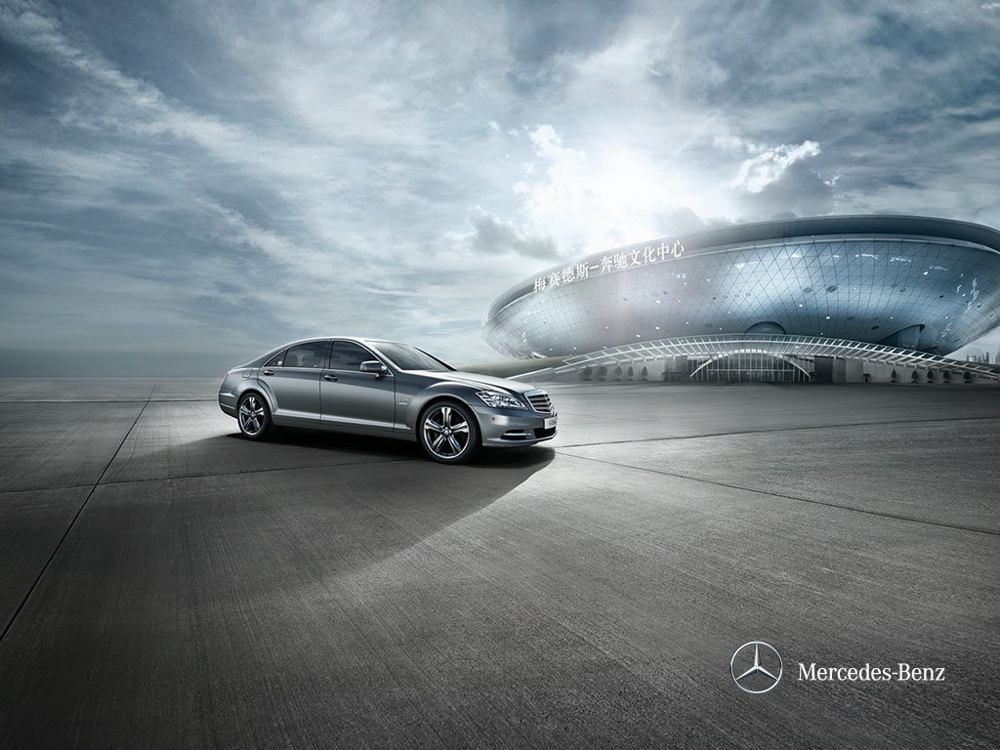
宝马汽车
华晨宝马汽车有限公司是宝马集团和华晨中国汽车控股有限公司共同投资成立的合资企业，从事BMW品牌汽车的制造、销售和售后服务。BMW是世界著名的高档汽车品牌，以卓越的工程设计、高品质的工艺水准、先进的创新科技和纯粹的驾驶乐趣享誉全球。2003年5月，华晨宝马汽车有限公司注册成立，其注册地和生产厂设在辽宁省省会沈阳市。
 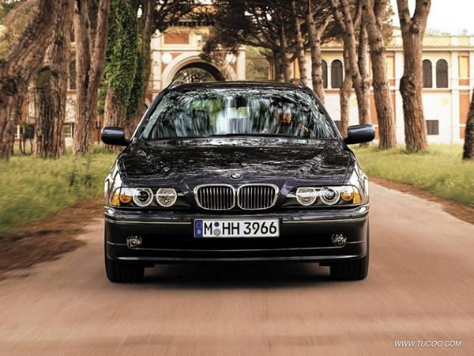
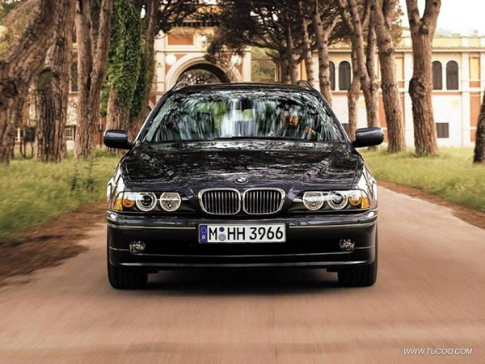
美国名车
凯迪拉克：高贵，豪华，气派，潇洒
凯迪拉克（香港译作"佳得利"）1902年诞生于被誉为美国汽车之城的底特律。百多年来，凯迪拉克在汽车行业创造了无数个第一，缔造了无数个豪华车的行业标准；可以说凯迪拉克的历史代表了美国豪华车的历史。在韦伯斯特大词典中，凯迪拉克被定义为"同类中最为出色、最具声望事物"的同义词；被一向以追求极致尊贵著称的伦敦皇家汽车俱乐部冠以"世界标准"的美誉。
凯迪拉克融汇了百年历史精华和一代代设计师的智慧才智，成为汽车工业的领导性品牌。
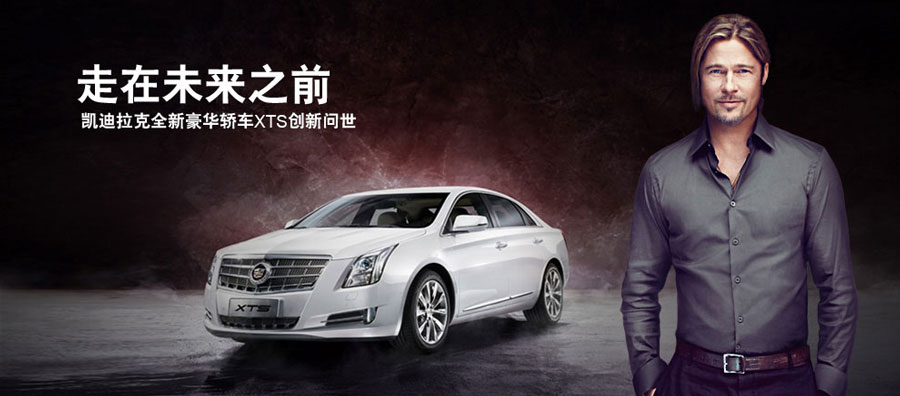

悍马：满足了一切需要
美国AMG公司以生产悍马（Hummer）而扬名世界。AMG公司的创始人是一位自行车制造商乌特，1903年成立越野（Overland）汽车部。1908年，约翰·威利购买了越野汽车部，并于1912年成立威利斯－越野（Willys－Overland）汽车公司，生产威利－骑士汽车。2009年，腾中重工从通用手中收购悍马，以失败告终，腾中重工放弃了悍马。


林肯：美国式的豪华
美国著名汽车企业福特旗下的一款豪华车，创立于1922年，创始人为亨利·利兰。其品牌名称是以美国总统亚伯拉罕·林肯的名字命名。自1939年美国总统富兰克林·罗斯福以来，由于林肯车杰出的性能、高雅的造型和无与伦比的舒适一直被白宫选为总统专车。它最"出名"的一款车是肯尼迪总统乘用的检阅车。林肯品牌著名的产品有："大陆"(Continental)、"马克八世（MarkⅧ）、"城市"(TownCar)和"领航员"
(Navigator)等目前在中国使用的林肯轿车多为"城市"系列。
中国汽车
红旗：权利与威望的象征,民族情感的图腾
红旗轿车在中国是个家喻户晓的名字。"红旗"二字已经远远超出了一个轿车品牌的含义，新中国发生的太多历史事件都与"红旗"有关。在国人心里，它有其他品牌所不能代替的位置。
1958年8月，中央为建国10周年庆典向一汽下达了制造国产高级轿车的任务。工人们以从吉林工业大学（现吉林大学）借来的1955型克莱斯勒高级轿车为蓝本，手工制作了一辆高级轿车。1959年10月1日，10辆崭新红旗轿车在首都国庆庆典上亮相，引得国外媒体争相报道。1980年，"红旗"因耗油量大、成本高、产量低而停产。1990年，一汽与国外公司合作重新开发红旗系列轿车，但在外形上摆脱不掉老款奥迪的影子，技术上也都是依靠国外。
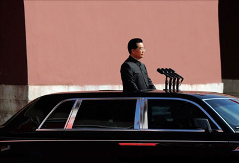
长城：每天进步一点点
长城汽车坚持聚焦发展，以"专注、专业、专家"为品牌理念，以专业化运营管理，打造专家品牌。目前拥有哈弗与长城两个产品品类品牌；主要是开发、生产车身长4.3米以上的SUV车型；长城品牌，目前旗下主要包括轿车、小型SUV、皮卡及MPV车型。
2012年以来，长城汽车确立了以"客户满意"和"市场领先"为主要目标的营销战略，通过营销服务的创新变革，实施一系列组合拳，提升终端形象和服务质量，把人、财、物向"客户满意"聚焦，以超值服务为客户创造惊喜，不断提升客户满意度。
长城汽车在国际、国内两个市场一直保持着领先优势。在国内市场，哈弗SUV已连续10年保持了全国销量第一，并于2013年3月销量率先突破100万辆，成为中国SUV的领导者品牌；长城皮卡已连续15年在全国保持了市场占有率、销量第一。长城轿车单品连续多月进入乘用车销售榜十强，短短几年累计销售突破30万辆，成为家轿市场的后起之秀。
在国际市场，自1998年首次出口以来，长城汽车在出口量和出口金额方面连续多年名列前茅；目前产品销往全球100多个国家和地区，其中意大利、澳大利亚、俄罗斯、智利等市场表现抢眼。长城汽车注重出口产品的品质和出口经营质量；旗下产品率先通过欧盟车型认证；此外，长城汽车已在十几个国家建立了组装厂，其中2012年2月投产的保加利亚组装厂，是中国自主品牌第一个在欧盟建立的汽车组装厂。

意大利名车
玛莎拉蒂：轿车与跑车的完美结合
玛莎拉蒂（Maserati）是一家意大利豪华汽车制造商，1914年12月1日成立于博洛尼亚（Bologna），公司总部现设于摩德纳（Modena），品牌的标志为一支三叉戟。1993年菲亚特（Fiat
S.p.A.）收购玛莎拉蒂，但品牌得以保留。而今的玛莎拉蒂全新轿跑系列是意大利顶尖轿跑车制作技术的体现，也是意大利设计美学以及优质工匠设计思维的完美结合。

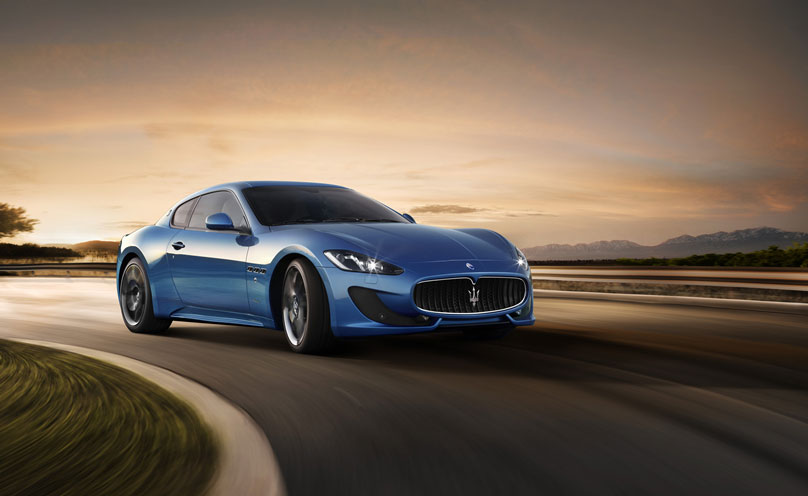
兰博基尼：挑战极限，豪放不羁
兰博基尼汽车公司（Automobili Lamborghini S.p.A.）是一家坐落于意大利圣亚加塔·波隆尼（Sant'Agata Bolognese）的跑车制造商。公司由费鲁吉欧·兰博基尼在1963年创立。早期由于经营不善，于1980年破产；数次易主后，1998年归入奥迪旗下，现为大众集团（Volkswagen
Group）旗下品牌之一。兰博基尼的标志是一头充满力量、正向对方攻击的斗牛，与大马力高性能跑车的特性相契合，同时彰显了创始人斗牛般不甘示弱的个性。主要产品有Gallardo、Murcielago、Aventador、Reventon、Sesto
Elemento等。